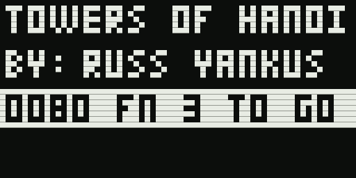
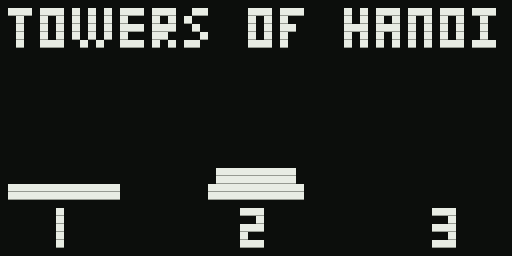
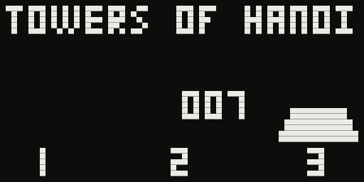

Towers of Hanoi
Russell Yankus · DREAMER no. 15 (1981-11) p. 16 1K RAM



Move a stack of 2 to 7 discs from the left stack to the right one, never putting a larger disc on a smaller one, using the middle stack as a parking space. Illegal moves are detected and the number of moves is counted and shown at the end. This game starts from address 0080, not C000.
Keys
Hold 2-7 for the number of discs, then 1/2/3 for the from and to stacks.
Files
| File | Version | Load | Run |
|---|---|---|---|
| Towers of Hanoi.d68 | main | 0080-03FF | 0080 |
Listing as transcribed (with notes): towers_of_hanoi.txt
Source
DREAMER no. 15 on archive.org, p. 16 (PDF page 18). Author: Russell Yankus.
Corrections applied
None.
Open doubts
None.